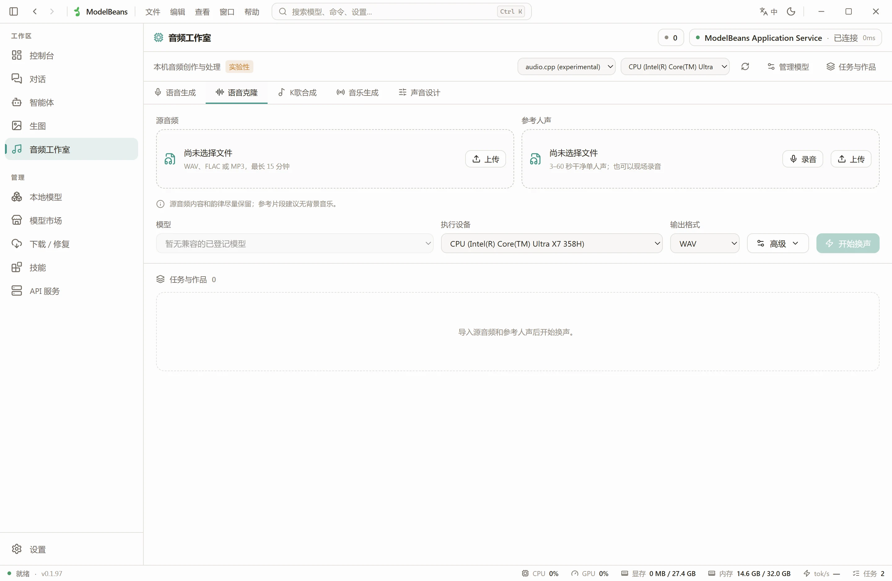
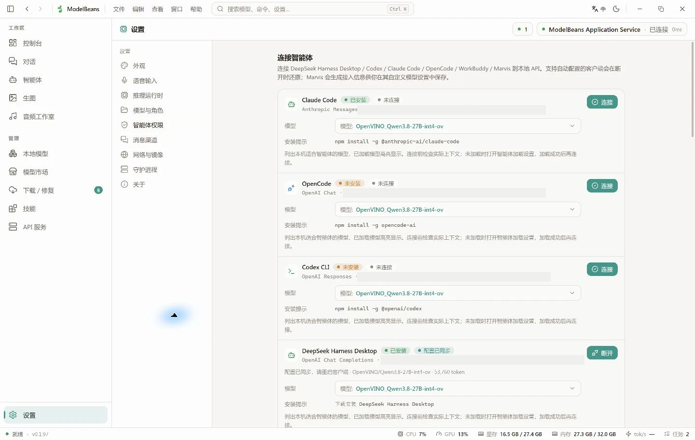

在自己的电脑上测一测
内置轻量性能评测与智能体就绪评测，帮助了解模型在本机的运行与工具调用表现。完整 BeansEval 评测软件计划后续独立发布。
从下载模型，到聊天、生图与音频创作，再到连接智能体和开发自己的应用。ModelBeans 把本地 AI 的这些用法，放在同一个桌面工作台里。
完整安装包包含 RuntimeShare；模型另行下载。请先阅读版本说明中的兼容范围。
内置 Hugging Face 与魔搭 ModelScope 两个模型市场，支持下载模型和导入本地文件。推荐目录按用途组织，帮助你从“想做什么”开始挑选。
通过 RuntimeShare 集成 llama.cpp、OpenVINO、ONNX Runtime、stable-diffusion.cpp、audio.cpp、Strata 等推理框架，减少分别搭环境的工作。后端可用性取决于硬件、驱动与模型格式。
聊天、看图、生图之外，音频工作室提供语音生成、语音克隆、K 歌合成、音乐生成和声音设计五种场景。选择对应模型，在图形界面中准备素材和执行任务。
音频工作室为实验性功能。不同模型支持的任务、语言和效果不同，部分模型组合仍有已知限制。

内置智能体与模型选择、加载流程集成，无需另装智能体客户端。选择工作目录，使用本地模型或配置的云端模型，尝试编写代码、处理文件和执行工具。
智能体仍在完善。任务完成质量取决于模型和配置；检查点只能恢复覆盖的文件，不能撤销所有命令副作用。自动智能路由不属于本次发布承诺。
使用本地推理，或自行配置云端模型。
查看工具调用、审批操作，运行中补充指令或停止。
查看文件差异，必要时恢复工作区检查点。
为常用智能体提供集中接入入口：选择模型、加载、检查上下文容量，并为支持的客户端自动配置连接。无需为了试用本地模型，重新选择一套工作工具。
Marvis 需手动保存生成的接入信息；部分客户端需设置环境变量或重启。连接兼容性不代表复杂任务完成能力。

内置轻量性能评测与智能体就绪评测，帮助了解模型在本机的运行与工具调用表现。完整 BeansEval 评测软件计划后续独立发布。
通过模型别名与角色组织本地服务。例如把 code 指向选定模型，让客户端使用固定名称。提供 OpenAI 风格及部分 Ollama、Anthropic 兼容接口，兼容范围以具体端点为准。
通过本地 API 连接脚本、插件和应用。RuntimeShare 提供共享推理运行时，开发者可以进一步探索独立服务进程与 SDK 集成。
先在 ModelBeans 中下载、加载并试用模型，再通过 HTTP API 调用。需要更深集成时，可参考嵌入式服务示例：由宿主程序启动独立服务进程，等待就绪、调用模型并负责关闭，无需桌面窗口一直打开。
嵌入方式是独立进程服务，不是进程内 DLL。独立开发者包尚待发布；当前示例用于集成准备，需要匹配的服务与运行时文件。
POST /v1/chat/completions
Authorization: Bearer YOUR_LOCAL_API_KEY
Content-Type: application/json
{
"model": "code",
"messages": [
{"role": "user", "content": "Hello!"}
],
"max_tokens": 128,
"stream": false
}示意请求：地址、密钥和 code 别名取自你自己的 API 服务配置。
ModelBeans 是在 Intel 和 AMD 集成显卡的 Windows 电脑上开发和测试的，这也是当前首发支持的平台。不需要先配一张独立显卡，就能开始尝试本地 AI。
这两类电脑是我们的日常开发与测试平台。
已有 Linux 相关代码，完成 Linux 实机验证后推出版本。
取得相应硬件后，再进行适配和验证并添加支持。
具体可用的推理后端和模型取决于显卡型号、驱动、模型格式与可用内存；平台支持不代表每个后端都支持这两类硬件。
发布后从 GitHub Release 获取 Windows x64 完整安装包。随包包含 RuntimeShare；模型权重需另外下载，磁盘与内存需求随模型而变化。
打开模型市场，从 Hugging Face 或魔搭选择适合本机的模型，也可以导入本地文件。选择可用设备，检查加载参数。
先尝试一轮聊天；再进入音频、生图或智能体。已有客户端的用户，可以在设置中打开“连接智能体”，按向导接入。
你好，我是 ModelBeans 的作者。这是我利用业余时间，和 GPT、Claude 一起做出来的个人项目。做它的出发点，是在自己的电脑上跑大模型实在太复杂、太零散了：下载和管理模型、配置不同的推理框架、确认系统和软硬件是否兼容、了解资源占用和实际性能，再到接入智能体软件，每一步都可能需要查资料、配环境、反复尝试。
我希望把这些环节串起来，放进 ModelBeans 这一个平台里，让它尽可能承担本地模型使用过程中繁琐的准备和管理工作。用户不必把大量时间花在搭环境、调配置和连接工具上，而能专注于用本地模型完成任务、尝试想法，或开发和分享自己的应用。这是我持续完善 ModelBeans 的方向。
ModelBeans 也内置了一个智能体。我会持续打磨它，让它与本地模型平台一起成长，逐步把模型管理、多种推理后端、资源感知和性能评测这些平台能力，转化为完成实际任务的优势。我希望它越来越懂得如何用好用户电脑上的模型和资源，成长为一个有自己特色、能帮上忙的智能体。
它还不完美，也有我没测过的模型和设备。如果你愿意试一试，告诉我哪里好用、哪里卡住了，或者你希望它还能做什么，我会很高兴。
— ModelBeans
提 Bug 或建议 ↗感谢每一位模型作者与上游项目维护者。ModelBeans 的很多能力，来自他们的工作。